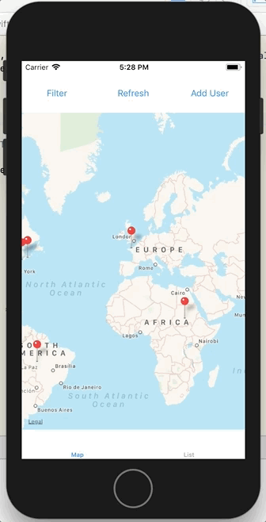
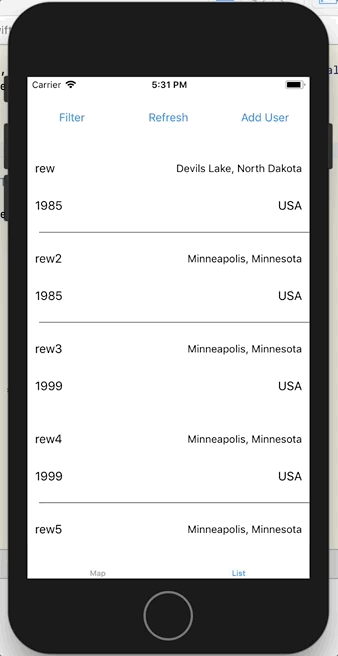
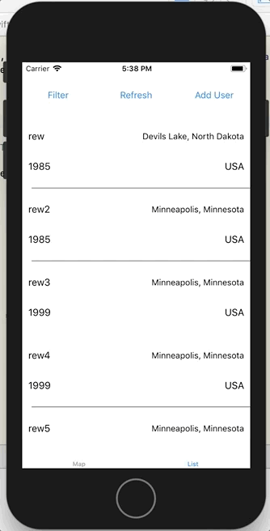
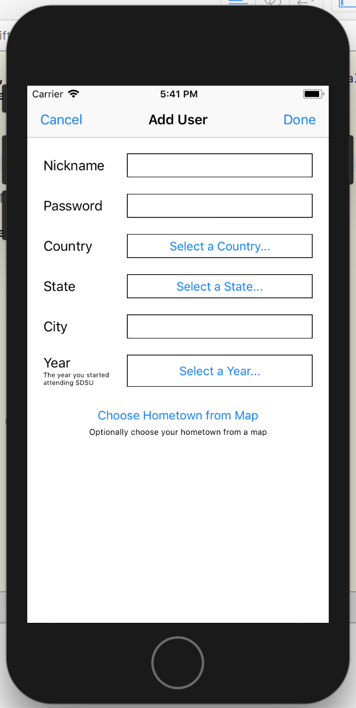
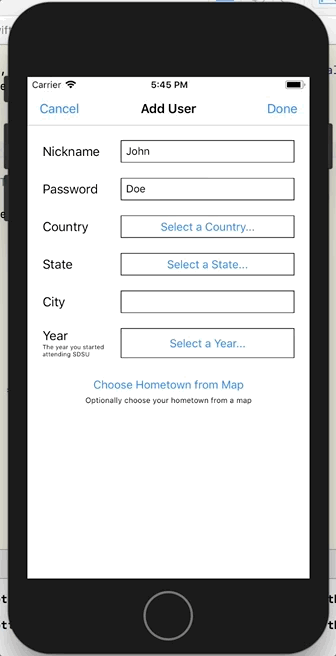

CS646 Assignment 5 - SDSU Hometown Locations
Assignment
The assignment focuses on networks and protocols, primarily using GET and POST URLs to communicate with a server to retrieve and post user data. It also requires integration of maps similar to assignment 4.
App Description
This app will allow users to post where they are from and allow them to see on a map where others are from. The app has two basic parts. The first part is posting the user information and the second is viewing the data posted by other users.
Posting User Information
The user posts 8 pieces of information described below.
- nickname - A string used to identify the user to others. Any two users can not use the same nickname, in other words the nicknames are unique. Nicknames are case insensitive. That is “FooBar” is considered the same as “foobar”. Required.
- password - A string determined by the user. Passwords must be at least three characters long. Required.
- country - A string which is the country the user is from. The list of supported countries is available from the server (see server protocol below). The server does not accept posts containing countries not supported by the server. Required.
- state - A string which is the state/providence the user is from in their country. The list of supported states is available from the server (see server protocol below). The server does not accept posts containing states not supported by the server. Required.
- city - A string which is the city the user is from. The server does not have a list of cities. Required.
- year - An integer representing the year the user started attending SDSU. The year needs to between 1970 and 2017. Required.
- longitude
- latitude
The longitude and latitude of the user's hometown, or if the user prefers, of their actual home. Only people in a few professions knows the latitude and longitude of anything, so do not ask the user to enter these numbers. Show them a map and let them mark a point on the map. Use this point to determine the latitude and longitude. Latitude values are doubles in the interval [-90, 90] and Longitude values are doubles in the interval [-180, 180). These values are optional in the sense that the user data can be sent to the server without them. You will lose points if you can not do this.
Viewing User's Hometown
The app gives the user two ways to view the hometowns posted to the server. The first is as a list and the second is as markers on a map. When showing the data as a list the viewer needs to be able to access the nickname, country, state and city of each entry. In the map tapping on the marker should provide the nickname of the person represented by the marker. The user needs to be able to filter data by country and year. The user may only want to see locations of users in California, or users that started SDSU in 2016, or users in California that started SDSU in 2015.
Server Protocol
The server supports 6 GET requests and 1 POST request detailed below.
When a request is successful it will return a response with the HTTP status 200. If there is a problem with the request the response will have a HTTP status of 404 or 400. When you request a URL that does not exists you will get a 404 response and the body of the response will be HTML. This can happen when you mistype the URL. Other errors will return a response with a 400 or 404 status and the body of the response will be JSON. This can happen if you do not include a required parameter, misspell a parameter or have a value that is out of range or the wrong type. All 200 responses indicate that their bodies contain JSON data.
Note that the URLs given below are case sensitive. The path and all query parameter names
are lower case.
GET URLs
https://bismarck.sdsu.edu/hometown/countries
Parameter: None
Returns JSON array of strings, the names of the countries currently supported
Sample return value:
["China","India","Mexico","USA"]
https://bismarck.sdsu.edu/hometown/states?country=ACountryName
Parameter: ACountryName = one of the country names returned from the first URL
Sample: https://bismarck.sdsu.edu/hometown/states?country=USA
Return JSON array of string, names of the states/providences in given country
Sample return value (Shortened for space reasons)
["Alabama","Alaska","Arizona","Wyoming"]
https://bismarck.sdsu.edu/hometown/nicknameexists?name=ANickName
Parameter: ANickName = A nickname that you wish to see if is already used
Sample: https://bismarck.sdsu.edu/hometown/nicknameexists?name=foo
Returns: JSON boolean. Returns true if nickname is already in use.
Sample return value:
false
https://bismarck.sdsu.edu/hometown/count
Parameter: None
Returns: Integer number of current users. As new users can be added to the server at any time this value may not be correct for very long. The actual number of users may be larger.
Sample return value:
12
https://bismarck.sdsu.edu/hometown/nextid
Parameter: None
Returns: The id that will be used for the next user. This is only useful when using the page query parameter with the reverse query.
Sample return value:
3
https://bismarck.sdsu.edu/hometown/users
The URL returns a JSON array of the users that have been added to the server. Each user is a JSON object. The keys in the object are: nickname, country, state, city, year, longitude, latitude, id and timestamp. The values at the keys nickname, country, state, city, year are as sent in the adduser post (see below). If the longitude and latitude are not give in the adduser post the values returned are 0. Each user has an id, which is added by the server. Ids are integers. The ids are unique and are increasing. Below is an sample response from the server. It is what the server returns after the two samples in the POST URL section are sent to the server. Since rew2 was sent after rew that user has an larger id. The time stamp is when the user data was received by the server in UTC.
Note that the list of users by default is sorted by increasing id. That is users that were added to the server earlier are listed earlier. The list is sorted by increasing time stamp.
[{
"nickname": "rew",
"city: "Devils Lake",
"longitude": 0,
"state": "North Dakota",
"year": 1985,
"id": 1,
"latitude": 0,
"time-stamp": "2017-03-01T02:44:03.247Z",
"country": "USA"
},
{
"nickname": "rew2",
"city": "Minneapolis",
"longitude": -93.293753,
"state": "Minnesota",
"year": 1985,
"id": 2,
"latitude": 44.96606,
"time-stamp": "2017-03-01T20:31:00.632Z",
"country": "USA"
}]
This request has 9 optional query parameters. These are used to further specify which users to return or to reverse the order of the list. These are described below.
country
Sample: https://bismarck.sdsu.edu/hometown/users?country=USA
Returns only the users in the given country.
state
Sample: https://bismarck.sdsu.edu/hometown/users?state=Minnesota
Returns only the users in the given state.
city
Sample: https://bismarck.sdsu.edu/hometown/users?city=Minneapolis
Returns only the users in the given city. Since different cities can have the same name (Paris, France & Paris, California) it is best to combine this with country and state query parameters. For example:
https://bismarck.sdsu.edu/hometown/users?country=USA&state=Minnesota&city=Minneapolis
year
Sample: https://bismarck.sdsu.edu/hometown/users?year=1985
Returns only the users that started SDSU in the given year.
afterid
Sample: https://bismarck.sdsu.edu/hometown/users?afterid=1
Returns only the users with ids strictly greater than the one given.
beforeid
Sample: https://bismarck.sdsu.edu/hometown/users?beforeid=2
Returns only the users with ids strictly less than the one given.
reverse
Sample: https://bismarck.sdsu.edu/hometown/users?reverse=true
When the value of reverse is true the order of the list returned is in reverse order. That is the most recent user added is now first in the returned list rather then last. That is the return list is sorted by timestamp with time decreasing, which is the same as sorting by decreasing id.
page
Sample: https://bismarck.sdsu.edu/hometown/users?page=0
When the list of users gets long it may not be practical to get the entire list in one request. Then this query parameter is present the list is divided into groups or pages. The default size of the group or page is 25 users. This can be change. See pagesize below. When page=0 you get the first 25 users. When page=1 you get the second 25 users. To get the entire list you increase the value by 1 until you get back an empty list. If you use pages with the reverse set to true you have to be careful. Pages are computed on the current list of users. On a reverse list first query to get the nextid then always use the beforeid with the page as in the following:
https://bismarck.sdsu.edu/hometown/users?page=2&reverse=true&beforeid=30
pagesize
Sample: https://bismarck.sdsu.edu/hometown/users?page=0&pagesize=5
This changes the size of pages from the default 25. Only has an affect when used with the page query.
The query parameters above can be used individually or combined. You can use all or none of them. The order they are listed the URL does not matter.
POST URL
https://bismarck.sdsu.edu/hometown/adduser
Body of the request: The body of the request is a JSON object with 6 required keys and 2 optional keys which are nickname, password, country, state, city, year, longitude, latitude. The latter two are optional. These are described above in the “Posting User Information” section. Two samples are:
{
"nickname" : "rew",
"password" : "catman",
"country" : "USA",
"state" : "North Dakota",
"city" : "Devils Lake",
"year" : 1985}
{"nickname" : "rew2",
"password" : "guess",
"country" : "USA",
"state" : "Minnesota",
"city" : "Minneapolis",
"year" : 1985,
"latitude" :44.966060,
"longitude" : -93.293753
}
If the post is successful then the server response has status code 200 and the body contains the string “ok”.
Implementation Details
Note: The code relating to connecting to the server and retrieving data can be abstracted for code reusability. Thus, a lot of the code for this task is redundant. I am looking to improve on this when I have the time. The scale of the assignment is somewhat large so only the interesting or difficult code implementation will be elaborated.
The MapView and UIPickerView were explored in the previous assignments and will not be explained here. The TabBarController holds two separate view controllers, a Map View displaying all the annotations of the users added to the server, and a Table View which also shows the users but in a list. Each cell of the table view displays the user's nickname, year he or she started SDSU, and the city, state, and country of origin. The user can click "Filter" which will bring up switch controls and picker views to choose the country and/or year to filter the user data. The user can also click "Add User" which will navigate the user to a form to fill out. On the form, the city, state, and country can be filled out manually or the user can click "Choose Hometown" which naviates to a map in which the location can be pinned. Clicking done will submit the data to the server.
UserModel.swift
Outlines the User object which will have properties for the nickname, password, country, state, city, year, and the latitude and longitude.
MapViewController.swift and ListUsersViewController.swift
Concurrency: long-running tasks shouldn't be performed on the UI thread and at the same time, UI widgets or views should not be updated on the non-UI thread (the background). The following lists some ways to achieve concurrency.
- Threads - performSelector(inBackground:) and performSelector(inMainThread:)
- Dispatch Queues - instantiate DispatchQueue object and call async
- Operation Queues - executes operations which can be run at the same time. Operations run on a separate thread. To start the operation, add it to the queue. Can create dependencies so that an operation depends on the completion of other operations before it can run.
Aside from displaying the data in a different way by adopting different protocols and implementing them, both controllers need to connect to the server and retrieve user data. The following are methods created to retrieve this data.
- retrieveDataFromServer() - builds the URL with the appropriate parameters depending on the filter options the user had set. A block operation is added to the queue which runs code on another thread.
- getUsersFromServer() takes the URL string that was built and initializes the URL object, sets the HTTP method to GET and the value for the header as "text/plain" and "Content-Type". Here, the request is sent to the server which will send back a response. For networking, the URLSession shared instance is grabbed and the dataTask() method called which takes the request and the completion handler.
- getUsersFromServerHandler() checks that data is not nil and that the HTTP status code is 200 before deserializing the JSON object into an array. On the main queue, the userData property is set to this deserialized array and either the annotations are reloaded for the MapViewController or the table data is reloaded for the ListUsersViewController.
/* A way to organize the following code would be to put this block
in a method for code resuability */
/*====================================*/
let mainQueue = OperationQueue.main
mainQueue.addOperation {
self.retrievingData = false
}
/*====================================*/
func retrieveDataFromServer() {
retrievingData = true
var urlString = ""
switch currentFilterParameter {
case .ALL:
urlString = "https://bismarck.sdsu.edu/hometown/users"
case .COUNTRY:
urlString = "https://bismarck.sdsu.edu/hometown/users?country=\(countryFilter)"
case .YEAR:
urlString = "https://bismarck.sdsu.edu/hometown/users?year=\(yearFilter)"
case .COUNTRY_AND_YEAR:
urlString = "https://bismarck.sdsu.edu/hometown/users?country=\(coutnryFilter)&year=\(yearFilter)"
}
let operation = BlockOperation.init(block: {self.getUsersFromServer(urlString: urlString)})
let queue = OperationQueue.init()
queue.addOperation(operation)
}
func getUsersFromServer(urlString: String) {
if let url = URL.init(string: urlString) {
var urlUsersRequest= URLRequest.init(url: url)
urlUsersRequest.httpMethod = "GET"
urlUsersRequest.setValue("text/plain", forHTTPHeaderField: "Content-Type")
let session = URLSession.shared
let task = session.dataTask(with: urlUsersRequest, completionHandler: getUsersFromServerHandler)
task.resume()
}
else {
let mainQueue = OperationQueue.main
mainQueue.addOperation {
self.retrievingData = false
}
}
}
func getUsersFromServerHandler(data: Data?, response: URLResponse?, error: Error?) -> Void {
guard (error == nil) else {
print(error!.localizedDescription)
let mainQueue = OperationQueue.main
mainQueue.addOperation {
self.retrievingData = false
}
return
}
let httpResponse = response as? HTTPURLResponse
let status: Int = httpResponse!.statusCode
guard (data != nil) && (status == 200) else {
let mainQueue = OperationQueue.main
mainQueue.addOperation {
self.retrievingData = false
}
return
}
do {
let json: Any = try JSONSerialization.jsonObject(with: data!)
let jsonNSArray = json as! NSArray
let mainQueue = OperationQueue.main
mainQueue.addOperation {
self.usersData = jsonNSArray as! Array<Dictionary<String, Any>>
// If in MapViewController
self.reloadAnnotations()
// If in ListUsersViewController
self.listTableView.reloadData()
self.retrievingData = false;
}
}
catch {
let mainQueue = OperationQueue.main
mainQueue.addOperation {
self.retrievingData = false
}
}
}
The Map View that displays the locations or origin of all the users.
An example of filtering the list of users by country. The map view will refresh to show only the relevant annotations and will center on the users.

The Table View that displays the nickname, year admitted into SDSU, the city, state, and country of each user on the server.
An example of filtering the list of users by year. The table view is refreshed to show the relevant users that match the conditions.
AddUserViewController.swift
If there is a validation error in the input, the border around the input field will be colored red and an AlertViewController is used to pop up the error message. The validation functions in this form are validateData(), chooseHometownValidation(), and checkValidCity(). Within this controller, there are methods that are called to both retrieve the user data and to post the user data. The reason as to why a request is sent using the GET HTTP method is to check if the nickname the user entered already exists in the server. The code to send this request and execute further code in the completion handler is similar to the code block above. For POST, the request is written similarly but the HTTP method should be set to "post" and setValue() should take in "application/json" as the content-type instead of "text/plain". The JSON string should be built using the user's inputs, which represents the new record to add.
func postDataToServer)() {
guard let nicknameText = nicknameTextField.text, let password = passwordTextField.text,
let country = countryButton.currentTitle, let state = stateButton.currentTitle, let city = cityTextField.text,
let year = yearButton.currentTitle, let yearInt = Int(year) else {
isNetworking = false;
return
}
let nickname = nicknameText.trimmingCharacters(in: .whitespacesAndNewlines)
let jsonRecordString = "{\"nickname\":\"\(nickname)\",\"password\":\"\(password)\",\"country\":\"\(country)\",
\"state\":\"\(state)\",\"city\":\"\(city)\",\"year\":\(yearInt)}"
let jsonRecord: Data? = jsonRecordString.data(using: .utf8)
let operation = BlockOperation.init(block: { self.postUser(jsonRecord: jsonRecord) })
let queue = OperationQueue.init()
queue.addOperation(operation)
}
func postUser(jsonRecord: Data?) {
if let url = URL.init(string: "https://bismarck.sdsu.edu/hometown/adduser") {
var urlPostUserRequest = URLRequest.init(url: url)
urlPostUserRequest.httpMethod = "POST"
urlPostUserRequest.httpBody = jsonRecord
urlPostUserRequest.setValue("application/json", forHTTPHeaderField: "Content-Type")
let session = URLSession.shared
let task = session.uploadTask(with: urlPostUserRequest, from: jsonRecord, completionHandler: postUserHandler)
task.resume()
}
else {
let mainQueue = OperationQueue.main
mainQueue.addOperation({
self.isNetworking = false
})
}
}
func postUserHandler(data: Data?, response: URLResponse?, error: Error?) -> Void {
guard (error == nil) else {
let mainQueue = OperationQueue.main
mainQueue.addOperation({
self.isNetworking = false
})
return
}
let httpResponse = response as? HTTPURLResponse
let status: Int = httpResponse!.statusCode
guard (status == 200) else {
let statusError = String(data: data!, encoding: String.Encoding.utf8)
print("\(statusError ?? "some status error") and statusCode: \(status)")
let mainQueue = OperationQueue.main
mainQueue.addOperation({
self.isNetworking = false
})
return
}
let mainQueue = OperationQueue.main
mainQueue.addOperation({
self.isNetworking = false
if (self.currentSource == .MAP) {
self.currentSource = .NONE
self.posted = true
self.performSegue(withIdentifier: self.unwindToMapSegue, sender: self)
}
else if (self.currentSource == .LIST_USERS) {
self.currentSource = .NONE
self.posted = true
self.performSegue(withIdentifier: self.unwindToListUsersSegue, sender: self)
}
})
}
The form that the user must fill out to add new users.
Tapping either country, state, or year will bring up a UIPickerView. Tapping country or state will require the view controller to send a request to the server to retrieve the list of acceptable countries or states. The data for the year is a range of numbers from 1970 to 2017.
ChooseHometownViewController.swift
As with the form, clicking the done button will post the user's information in the form of a request to the server. Thus, the code to construct the JSON object in a string, add an operation to the queue on a separate thread, create the URL request, and specify the handler once there is a response from the server, are similar. However, what's different about hsi view controller is that the location and coordinates that the user clicked and pinned on the map must be reversed-geocoded so that the city, state, and country can be correctly sent to the server. Since we don't want coordinate data to be sent, reverse geocoding is done to send the data in the correct form.
func reverseGeocodeCoordinates() {
guard let coordinates = userCoordinates else {
isNetworking = false
return
}
let location = CLLocation.init(latitude: coordinates.latitude, longitude: coordinates.longitude)
let locator = CLGeocoder()
locator.reverseGeocodeLocation(location) { (placemarks, errors) in
if let place = placemarks?[0] {
self.userCity = place.locality
self.userCountry = place.country
if (place.country == "United States") {
self.userState = UnabbreviatedStateOrProvidence.returnUnabbreviated(country: "United States",
administrativeArea: place.administrativeArea)
self.userCountry = "USA"
}
else if (place.country == "Mexico") {
self.userState = UnabbreviatedStateOrProvidence.returnUnabbreviated(country: "Mexico",
administrativeArea: place.administrativeArea)
}
else {
self.userState = place.administrativeArea
}
self.postDataToServer()
}
else {
self.isNetworking = false
}
}
}
An alternative to filling out the entire form is to tap on "Choose Hometown from Map" after filling out the nickname, password, and year. The example shows that a location is pinned and "done" is tapped to submit the new information to the server. This then takes the user back to the map view or the table view and refreshes the annotations or the list of users.